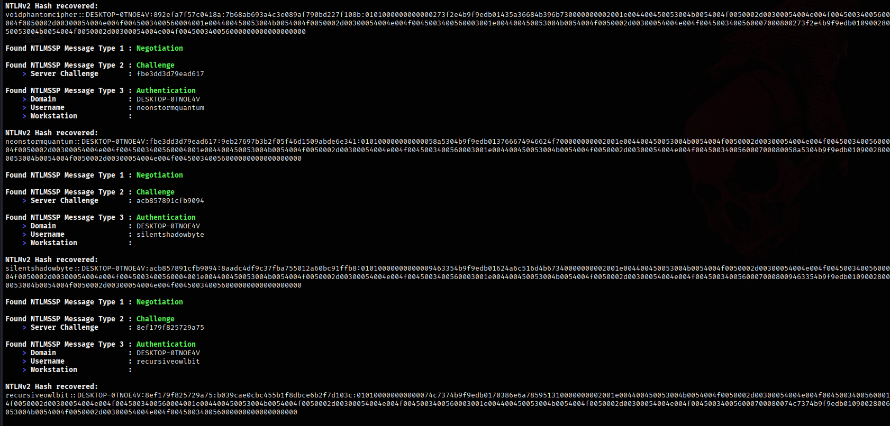
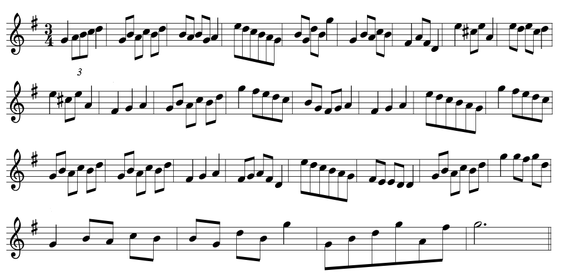
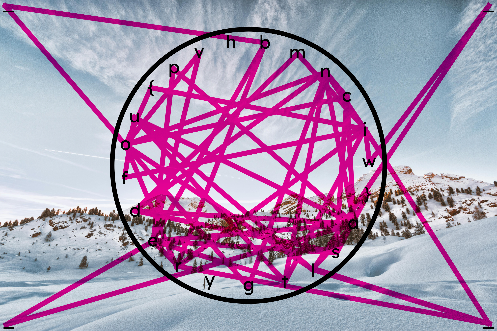

SwampCTF 2025
Forensic / MuddyWater
During network traffic analysis, it was discovered that NTLMv2 authentication attempts were being transmitted over the SMB protocol without proper protection mechanisms such as SMB signing. This exposed the network to an NTLM Relay Attack, where an attacker could intercept and relay authentication requests to another service, effectively impersonating the victim without knowing their password. The captured .pcap file revealed evidence of such an attack, indicating that a rogue server likely captured NTLM challenge-response exchanges and attempted to relay them to a legitimate target. This vulnerability highlights a critical weakness in environments that rely on NTLM authentication without enforcing secure configurations, making them susceptible to credential misuse, lateral movement, and privilege escalation.

Hash Extraction
"Showcasing my journey through CTF challenges."
Audre Montero

ECTF 2025 / Steganography / JB1804
irisCTF 2025 / OSINT / Not Eelaborate

BroncoCTF 2025 / Forensics / wordlands